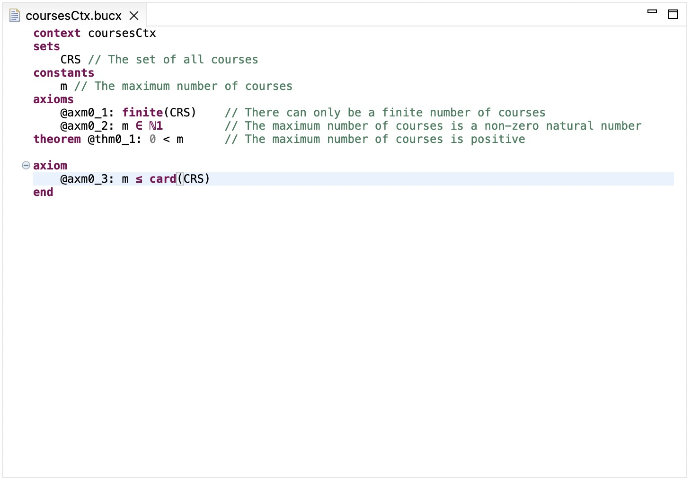
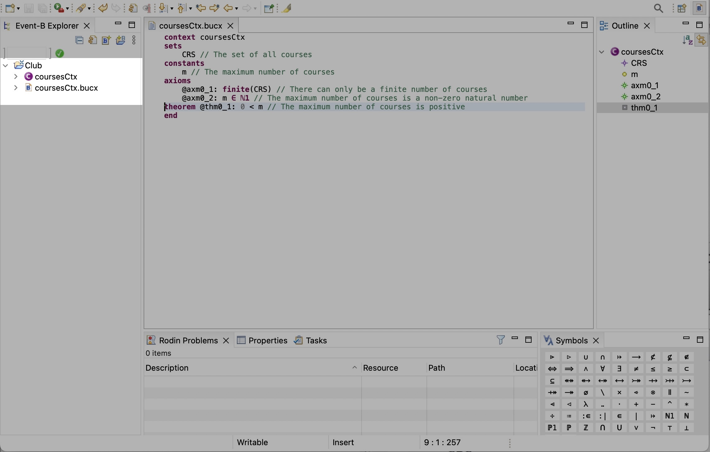

Task 2. Create an XContext
Introduction
The purpose of this task is to create a simple XContext within the newly created project.
Step 1. Create a New XContext Named coursesCtx.bucx
-
Use the menu
File -> New -> Otherto open theSelect a wizarddialog. -
On the pop-up
Select a wizarddialog, navigate toGeneral -> File, clickNext. -
On the
Create New Filedialog, chooseClubproject as the parent folder, and putcoursesCtx.bucxas theFile name. The file extension.bucxis important to indicate that the file is an XContext. ClickFinishto confirm the file creation. -
Important: A pop-up dialog will be displayed asking to convert the
Clubproject to an XText project, please answer Yes. This enables the XText builder to work automatically for converting CamilleX constructs to Rodin constructs. (If you miss this step, you can invoke it via right click on theClubproject from the Event-B Explorer andConfigure -> Convert to XText Project). The new created filecoursesCtx.bucxwill be opened automatically in an editor. It has some error markers and we will fix this in the next step.
Step 2. Set the Content of courseCtx.bucx
- Using the editor, set the content of
coursesCtx.bucxas follows.
context coursesCtx
sets
CRS // The set of all courses
constants
m // The maximum number of courses
axioms
@axm0_1: finite(CRS) // There can only be a finite number of courses
@axm0_2: m ∈ ℕ1 // The maximum number of courses is a non-zero natural number
theorem @thm0_1: 0 < m // The maximum number of courses is positive
end

Typesetting Mathematical Symbols
In order to typeset Event-B mathematical symbols, e.g., ℕ1, there
are three different approaches.
-
Using Content Assist. Content Assist can translate ASCII characters into Unicode symbols. For example, when typing
NATand invoking content assist (e.g., onCtrl + Spaceon Mac OS), a dropdown list will appear with options for typesettingℕandℕ1. -
Using Quick Fix. The CamilleX editor offer quick fixes for ASCII untranslated formula. Untranslated formula are indicated by warnings with yellow squiggly lines under the formula. Hover the mouse over the untranslated formulae, a pop-up dialog will appear to offer to translate the formulae.
-
Using Symbols Table. Symbols can be inserted into the CamilleX editor. (If the Symbols table is not visible in your Rodin, you can open it from the menu
Window -> Show View -> Symbols.
Step 3. Save the coursesCtx.bucx file
Save the file coursesCtx.bucx, the XText builder will generate
Rodin context coursesCtx automatically.
Conclusion
By now, the XContext coursesCtx.bucx and the corresponding Rodin
Context coursesCtx should be visible in the Event-B Explorer.
